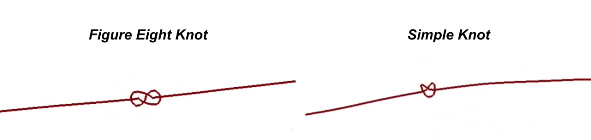
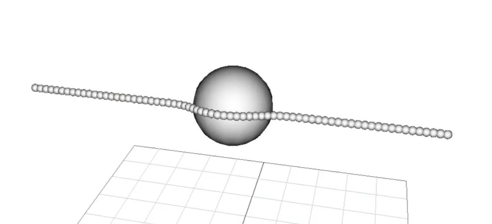
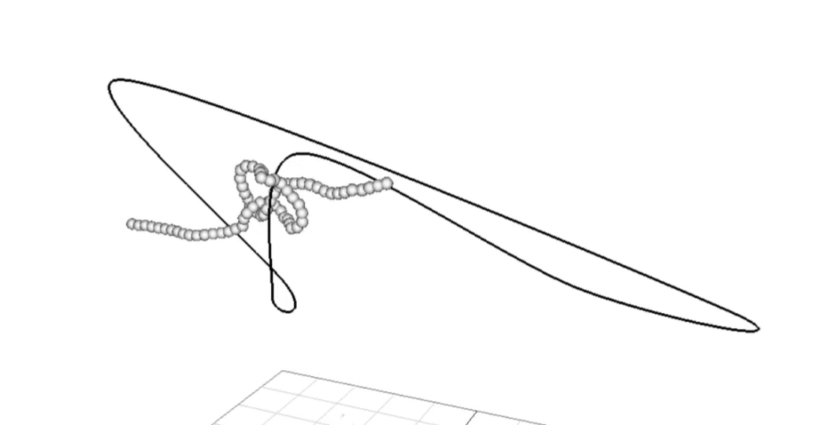
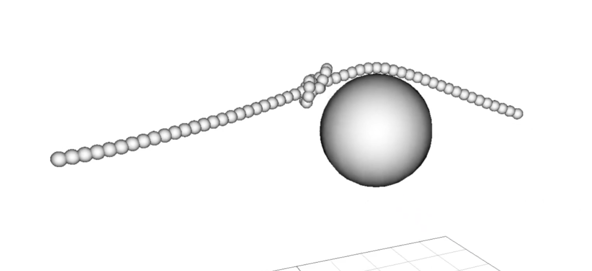

Full Demo
The Main Idea
For my final project, I simulated a rope that is able to tie itself into different knots. By pressing different keys, the rope will be triggered to execute preprogrammed movement sequences that tie it into various knots. The knots can then be interacted with as expected in a normal physics environment. For this project, I implemented the knots shown above.
Rope Construction and Collision Handling
The rope consists of a line of particles connected by springs, extremely similar to those used in A5. The particles are positioned such that they slightly intersect with their neighbors in order to minimize areas where the rope might slip through itself.
The rope is able to collide both with non-rope particles and with itself. Collisions with non-rope particles are handled by each rope particle independently using a technique similar to the one implemented in A5. Rope particles collide with each other in the same way, but are programmed to ignore collisions with their neighbors.
Tying the Knots
The knots are actually tied by moving one of the rope's end points while keeping the other end point fixed. Because the environment has no gravity force, this is sufficient to create the loops and motions necessary to tie knots. The motion of the non-fixed end point is achieved using a keyframing process similar to the one implemented in A1. The paths followed to tie each knot were created by placing keyframes to create a path mimicking the motions needed to tie that specific knot. Keyframe positions were estimated based on reference material and perfected through a process of trial and error. Different sets of keyframes can be chosen at runtime, allowing the user to pick which knot they would like to tie.
Knot Stability
The knots tied by this simulation are extremely stable. Under most circumstances, the knots behave like a static entity and do not move or bounce around. This is due to two key factors: Fine tuning of collisions between rope particles and a pseudo-friction force generated by the rope's bumpy surface.
Acknowledgements
This project borrows heavily from code provided and written for CSCE 450 Assignments 1 and 5. Credit for the provided code goes to Dr. Sueda. The layout of this website was inspired by the website written by Luis Pantin Mayaudon for their final project (CSCE 489, Fall 2020). All knot tying reference material was found on animatedknots.com.